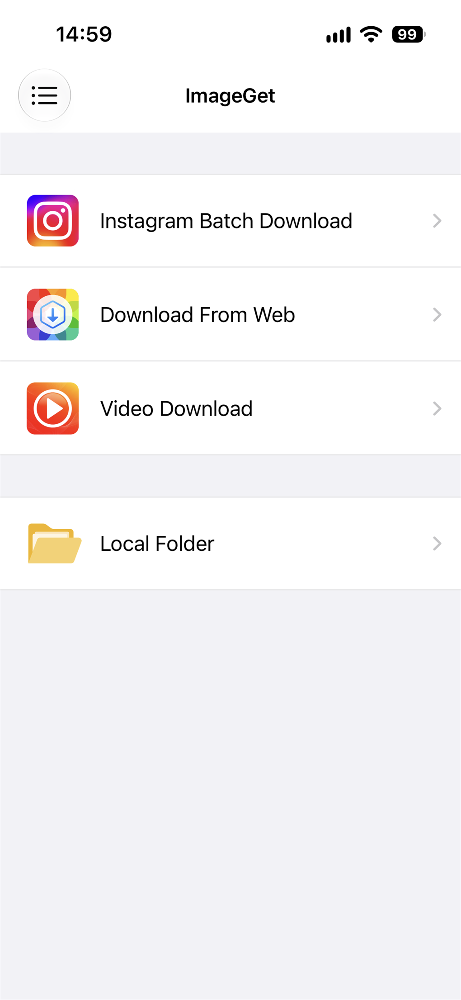
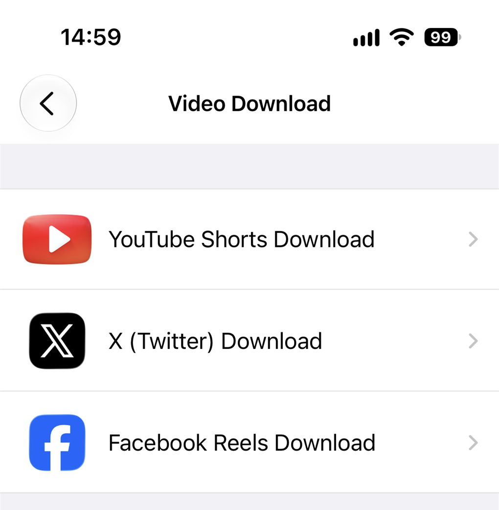
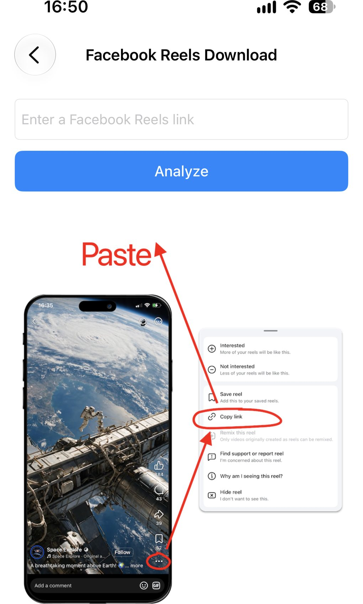
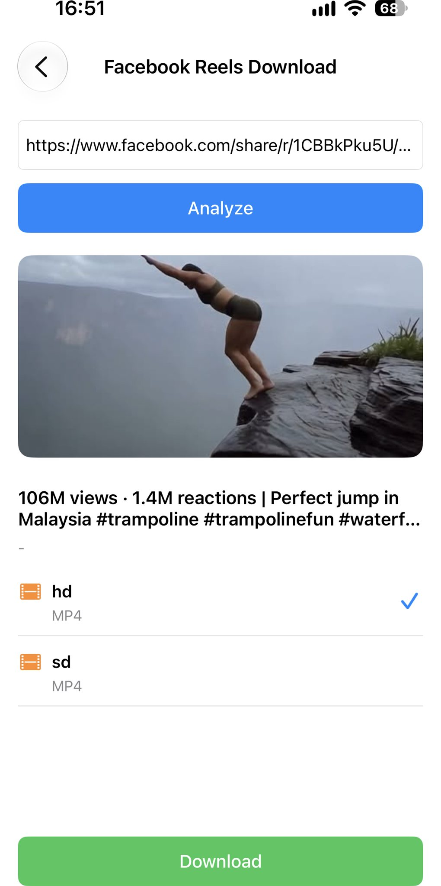

How to Download Facebook Reels
Want to save a Facebook Reel to watch offline or share later? ImageGet makes it simple. Paste a Reel link, and the app analyzes the video and lets you download it straight to your photo library — no screen recording, no third-party tools. Here's how to download Facebook Reels, step by step.
Download ImageGet free — save Facebook Reels in one tap.
Download ImageGetStep 1: Open ImageGet and tap Video Download
Open ImageGet. On the main screen, tap Video Download — that's where the app keeps its video tools.

Step 2: Choose Facebook Reels Download
Then tap Facebook Reels Download. ImageGet switches into Reels mode and waits for your link — so you get the video itself, not just the thumbnail.

Step 3: Copy the Reel link
Open the Facebook app and find the Reel you want to keep. Tap the ⋯ button on the Reel, then tap Copy link. On a desktop browser, open the Reel and copy the URL from the address bar.

Step 4: Paste it into ImageGet
Paste the Reel link into ImageGet. The app analyzes the video automatically — no searching, no waiting around. In a moment, ImageGet shows you the Reel, ready to download.
Step 5: Download the Reel
Choose your quality — hd for the best picture, sd to save space — then tap Download. The Reel saves as a video to your photo library, with sound. You can rewatch it anytime, even offline, without opening Facebook.

Tips for downloading Reels
- Free downloads — the free plan gives you 3 video downloads, shared across Facebook Reels, YouTube Shorts and X (Twitter) videos; upgrade to Premium for unlimited downloads.
- Choose your quality — pick hd or sd to balance file size and picture quality.
- No screen recording — ImageGet downloads the Reel directly, so there's no quality loss from re-recording.
- Shared links work too — a Copy link URL from the Facebook app pastes straight in, even the shortened facebook.com/share/r/… form.
FAQ
Can I download Facebook Reels for free?
Yes — the free plan includes 3 video downloads, which cover Facebook Reels, YouTube Shorts and X (Twitter) videos. Upgrade to Premium for unlimited downloads.
Do Facebook Reels save with sound?
Yes — Reels save as videos with sound, in your chosen quality.
Do I need to screen-record to save a Reel?
No. ImageGet downloads the Reel directly — no screen recording needed.
See it. Save it. Simple.
Download ImageGet free and save Facebook Reels in one tap.
Download ImageGet